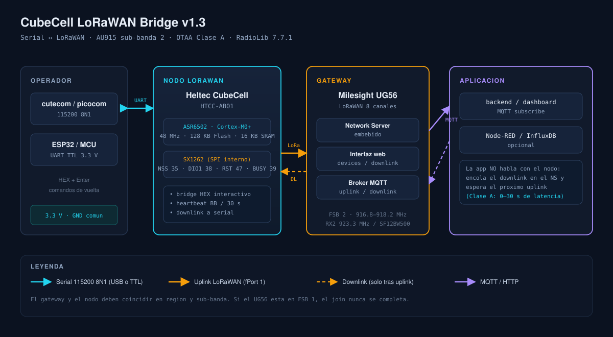
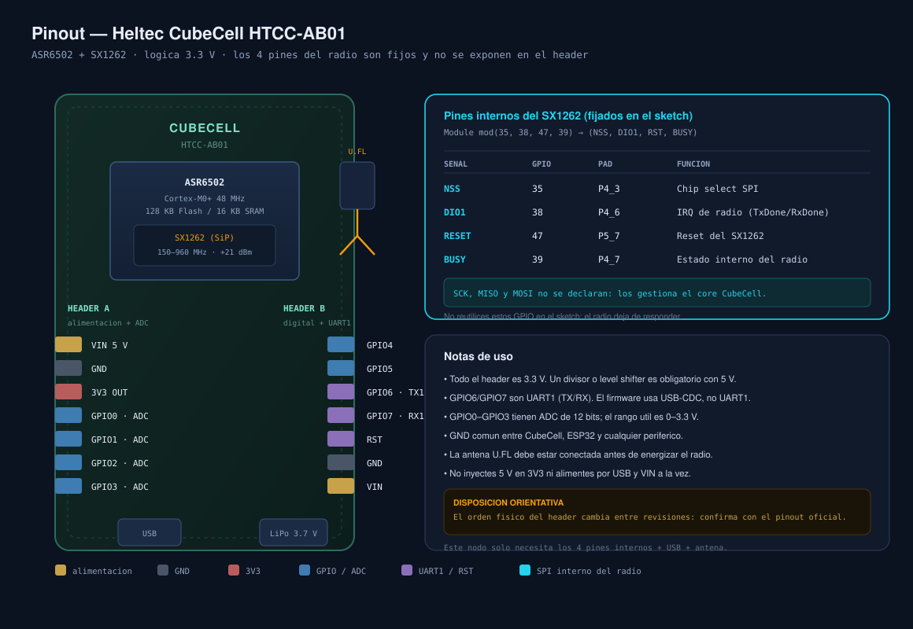
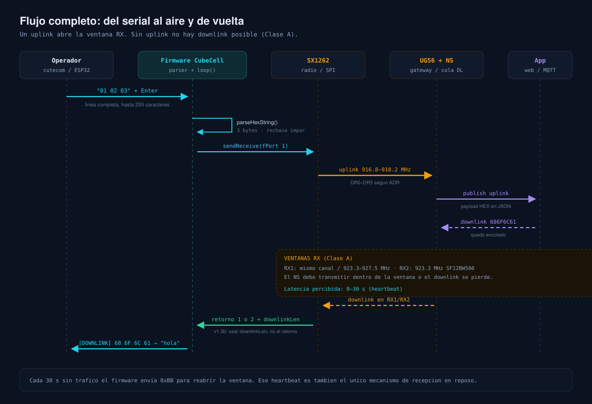

Serial a LoRaWAN.
Y vuelta.
Del puerto serie al aire, y de vuelta. Un nodo Heltec CubeCell que convierte cualquier UART en un enlace LoRaWAN bidireccional: HEX por serie al gateway y downlinks de vuelta al terminal.

Qué es y por qué existe
El problema, el enfoque y el alcance real del proyecto.
Puente bidireccional entre un puerto serie y una red LoRaWAN, implementado sobre un Heltec CubeCell HTCC-AB01 con ASR6502 y SX1262. Las líneas HEX que llegan por Serial se envían como uplinks al fPort 1, y los downlinks se imprimen en hexadecimal y como texto; un heartbeat de un byte cada 30 s mantiene la ventana de recepción. Está pensado para integrar un equipo con puerto serie en una red LoRaWAN sin escribir un firmware de sensores.
Demuestra el ciclo OTAA completo en AU915 FSB 2 con RadioLib 7.7.1, incluida la re-unión tras un reinicio del servidor de red y la recepción de downlinks por web o MQTT. No persiste sesión ni DevNonce, no usa deep sleep, no envía uplinks confirmados ni admite OTA, y el heartbeat fijo genera 2.880 uplinks por día. El payload se trunca en silencio a 51 bytes y las credenciales viven en el .ino.
Los tropiezos salen de la bitácora y de las versiones tempranas. La evaluación usa seis criterios fijos, de 1 a 5, y no premia la espectacularidad: premia que el proyecto se pueda reproducir y entender.
Un puente entre dos radios
El ESP32 no tiene LoRaWAN; el CubeCell sí. Este firmware convierte al CubeCell en una pasarela serial transparente.
El problema
Un proyecto con ESP32 quiere enviar datos por LoRaWAN, pero el ESP32 no tiene radio LoRa ni pila LoRaWAN. Agregar un módulo y una pila completa al ESP32 consume pines, RAM y tiempo.
La solución
El CubeCell hace solo de puente: recibe tramas HEX por Serial, las envía por LoRaWAN y devuelve los downlinks al ESP32. Un heartbeat BB cada 30 s mantiene viva la sesión y permite detectar silencios.
Cómo funciona, paso a paso
El ESP32 cree que habla por serial; el CubeCell traduce a LoRaWAN.
El ESP32 escribe
Envía una trama HEX por Serial al CubeCell, con el formato que espera el puente.
El CubeCell transmite
RadioLib envía la trama por LoRaWAN en AU915, sub-banda 2, con OTAA y Clase A.
El gateway recibe
El UG56 reenvía la trama al servidor LoRaWAN, que la procesa como cualquier nodo.
El downlink vuelve
Si hay respuesta, el CubeCell la recibe en la ventana de Clase A y la escribe por Serial al ESP32.
CubeCell · puente serie a LoRaWAN
Un puente bidireccional entre el puerto serie y LoRaWAN: escribís HEX y sale al aire, y cada downlink vuelve impreso en hexadecimal y ASCII.
CubeCell · puente serie a LoRaWAN
Un puente bidireccional entre el puerto serie y LoRaWAN: escribís HEX y sale al aire, y cada downlink vuelve impreso en hexadecimal y ASCII.
Guion basado en el código y la documentación del repo; las credenciales del sketch son marcadores en cero y el nodo no persiste sesión entre reinicios.
Dos mundos, un cable
El puente no interpreta el payload: solo lo transporta y mantiene la sesión.
OTAA Clase A
La sesión se une a la red y abre ventanas de recepción solo después de transmitir.
Heartbeat BB
Cada 30 s se envía una trama de vida para mantener la sesión y detectar caídas.
HEX por serial
El contrato con el ESP32 es texto HEX, fácil de depurar con cualquier monitor serial.
Decisiones de ingeniería
El puente hace una cosa y la hace predecible.
Puente bidireccional
Subida por serial y bajada por downlink, sin lógica de aplicación.
AU915 sub-banda 2
Configuración regional explícita para Chile y la región.
OTAA
Credenciales de unión separadas del código y documentadas como placeholders.
Heartbeat
Una trama BB cada 30 s para saber que el nodo sigue vivo.
ASR6502 + SX1262
El chip y la radio integrados del HTCC-AB01.
RadioLib
Pila LoRaWAN mantenida y documentada, sin reinventar el join.
El sistema, en dibujos
Los diagramas se mantienen en el repositorio y se actualizan con el código.


Con qué está construido
C++ con RadioLib sobre Heltec CubeCell HTCC-AB01. El ESP32 del otro lado solo necesita un puerto serial y un parser HEX.
$ arduino-cli compile --fqbn CubeCell:cubeCell:HTCC-AB01 . $ arduino-cli upload -p /dev/ttyUSB0 --fqbn CubeCell:cubeCell:HTCC-AB01 .
Todo está escrito
Cada decisión, cada límite y cada comando están documentados en el repositorio. Sin folletos: lo que funciona se muestra, lo que no, también.
La guía completa
Hardware, región, OTAA, puente serial, downlinks y límites.
Abrir documento DATASHEETManual de operación
Pines, credenciales, heartbeat, formato HEX y diagnóstico.
Abrir documento DEVELOPERGuía de código
RadioLib, join, callbacks, serial y extensión.
Abrir documento REFERENCESReferencias
Heltec, RadioLib, LoRaWAN y UG56.
Abrir documentoLos tropiezos, documentados
Lo que no funcionó en las primeras versiones, con la corrección aplicada.
Join intermitente con el stack de Heltec
Los timers del core ASR6502 se escalaban ~100× y las ventanas RX no coincidían, así que el join fallaba de forma aleatoria. Se descartaron credenciales, FSB, antena y cobertura antes de identificar el problema.
Join reproducible, pero con busy-wait
La migración a RadioLib y a un sleep basado en millis() corrigió el join, a costa de 1–2 s de espera activa por ciclo. Se fijó RadioLib 7.7.1 y scanGuard = 200 para estabilizar la ventana.
Downlinks multi-byte truncados a 1 byte
Se usaba el retorno de sendReceive() como longitud, pero ese valor indica la ventana RX (1 o 2). En v1.3b se pasó un size_t downlinkLen de entrada y salida y se imprimieron los bytes completos.
DevNonce repetido tras cada reinicio
Sin persistencia de sesión, cada arranque hace un join nuevo y el servidor puede responder -1116 NO_JOIN_ACCEPT por nonce repetido. La solución documentada es resetear la sesión en el NS o migrar a ABP/NVM, fuera del alcance del repo.
Cómo se mide este proyecto
Seis criterios fijos, con la evidencia que respalda cada nota.
Lo que suelen preguntar
¿Qué hace el nodo?
Convierte líneas HEX recibidas por Serial en uplinks LoRaWAN y muestra los downlinks en hexadecimal y texto. También envía un heartbeat de 0xBB cada 30 s.
¿Qué no hace?
No persiste sesión ni DevNonce, no usa deep sleep, no envía uplinks confirmados y no filtra downlinks MAC. No es un nodo de sensores ni un gateway.
¿Cómo se despliega?
Se compila con el core de CubeCell y RadioLib 7.7.1, se cargan las claves OTAA en el .ino y se une a un NS AU915 FSB 2. La aplicación recibe los uplinks en fPort 1 y puede enviar downlinks por web o MQTT.
¿Qué se puede reutilizar?
El parser HEX con timeout, el patrón de re-join antes de transmitir, la impresión de downlinks y la migración de un stack con timers roto a RadioLib.
¿Te animás?
Usá esto como base y referencia para conectar un equipo serial a LoRaWAN AU915, con downlinks y heartbeat. Este proyecto es la prueba de que se puede hacer con componentes reales.